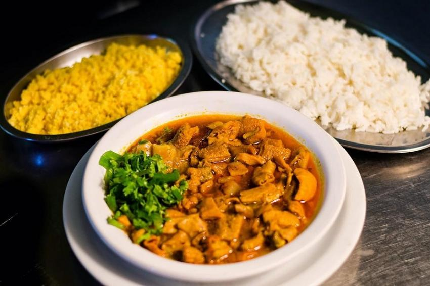

Panelada

Description
A panelada é um prato da culinária nordestina, composto principalmente por miúdos de boi (bucho, tripas e mocotó), cozidos em um caldo rico e temperado até obter uma textura macia e saborosa.
Ingredients
- 1 kg de bucho
- 1 kg de tripa
- 1 kg de nervo de boi
- 1 kg de mocotó
- 4 cebolas picadas
- Óleo de soja
- Pimenta do reino
- Corante
- Sal
Steps
- O primeiro passo é limpar muito bem as vísceras.
- Depois corte-as em pequenos pedaços, coloque tudo numa panela e deixe escaldar, com pouca água, em fogo brando, durante 1 hora.
- Em seguida, os temperos são colocados um a um.
- A panelada deve continuar no fogo no mínimo por três horas, um segredo para continuar o sabor.
Home